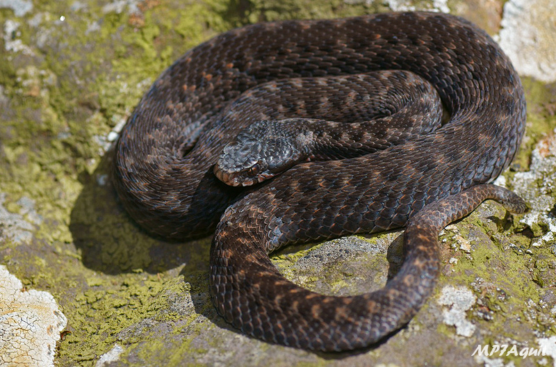
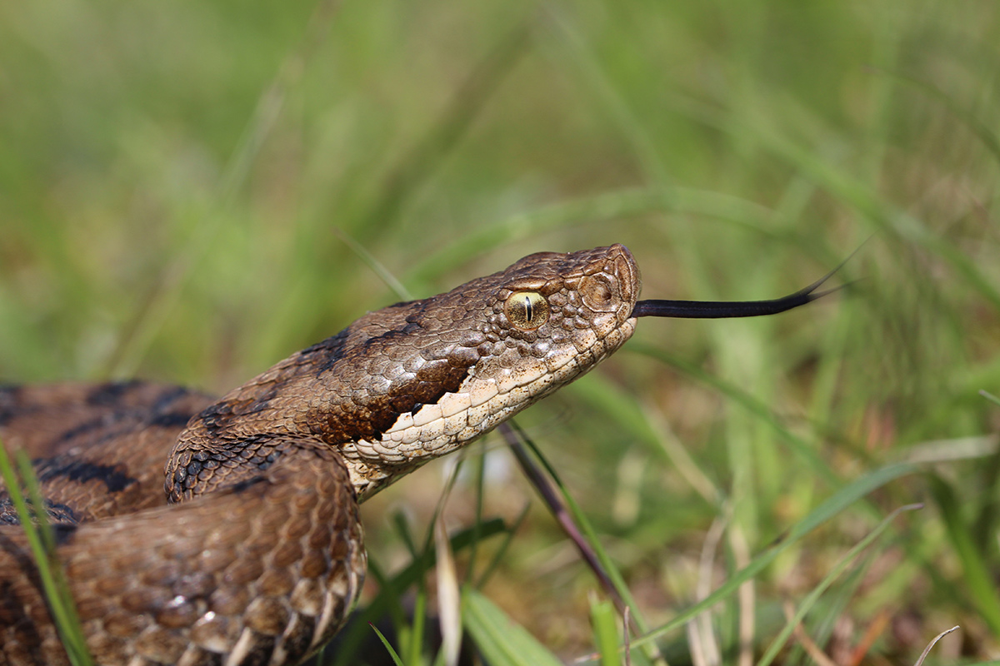
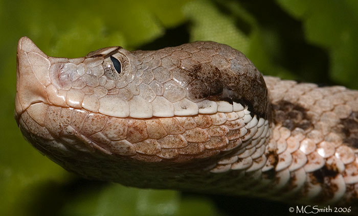
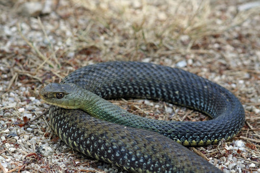
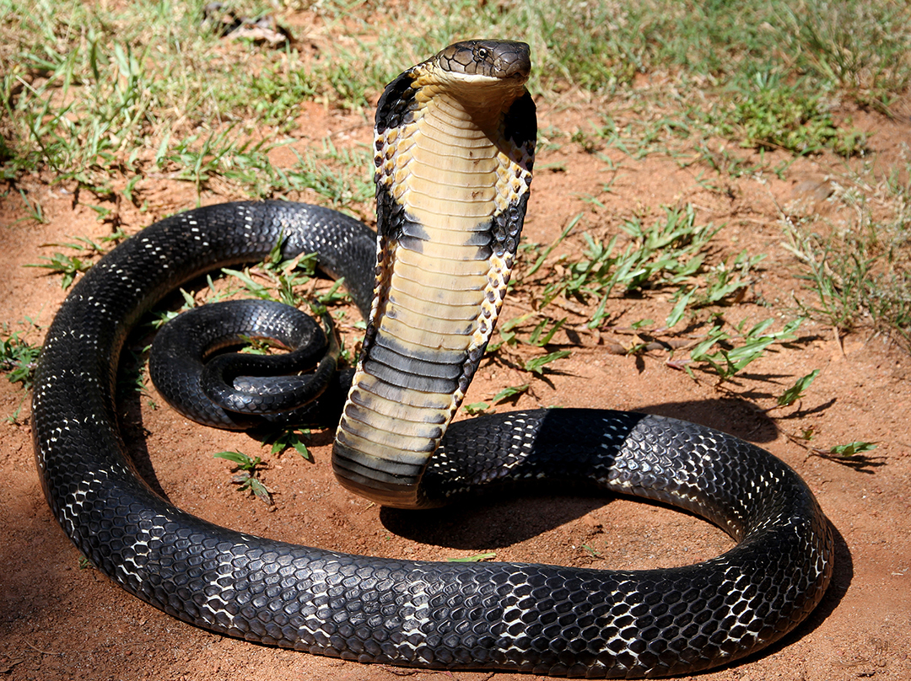

Here are the 5 venomous snakes in Spain:
(Click on the image or text to view more information about the snake)
1. Seoane's viper

2. European Aspis viper

3. Snub-Nosed Viper

4. Montpellier snake

5. Hooded Snake

To view all snakes in Spain, please click here.